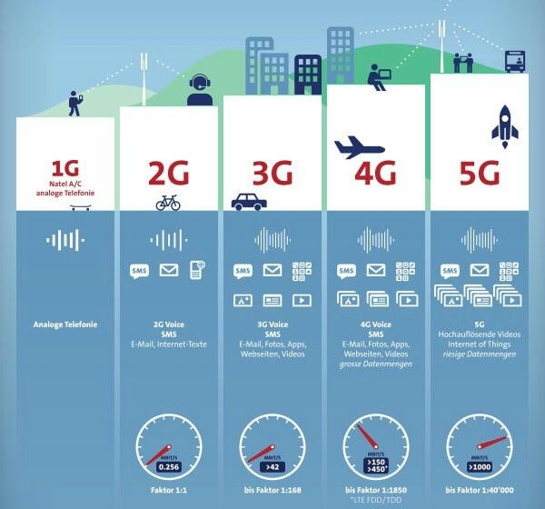
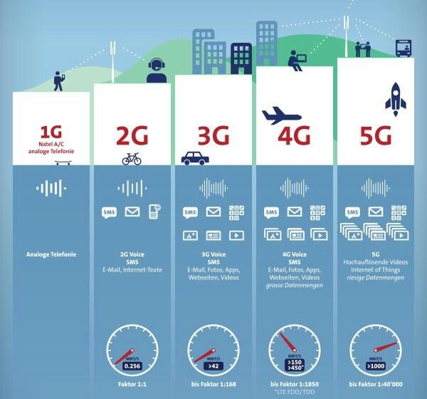

Evolutia Internetului
„Internetul este locul unde se întâlnesc ideile.” – Tim Berners-Lee

Evoluția internetului este un proces fascinant și complex, care a început cu câteva decenii în urmă și a transformat complet societatea, economia și modul în care interacționăm. Iată câteva etape esențiale:
Începutul
Anul 1960-
- Primele rețele de calculatoare: Internetul își are rădăcinile în proiecte de cercetare militare și academice. Unul dintre primele exemple a fost ARPANET, creat de DARPA (Defense Advanced Research Projects Agency) în Statele Unite, care permitea comunicarea între universități și instituții guvernamentale.
Anul 1980 -
- Protocolul TCP/IP: La începutul anilor 1980, a fost introdus protocolul TCP/IP, care a devenit standardul de comunicare pe rețelele globale și a permis ca mai multe rețele să fie conectate între ele.
Anul 1991 -
- World Wide Web (WWW): Tim Berners-Lee a inventat World Wide Web, un sistem de navigare pe internet bazat pe pagini web conectate între ele prin hyperlinkuri.
Anul 1990-2000 -
- Expansiunea comerțului online și a site-urilor web: Companii precum Amazon, eBay și Google își făceau apariția, iar comerțul online începea să crească semnificativ.
Anul 2000-2010 -
- Social media și revoluția mobilă: Rețelele sociale precum Facebook, Twitter și YouTube au transformat modul în care oamenii interacționează online. Apariția smartphone-urilor a contribuit la creșterea accesului la internet de pe dispozitive mobile.
Anul 2010-prezent -
- Internetul ca platformă globală și integrarea tehnologiilor avansate: Tehnologii precum 5G, IoT (Internet of Things), inteligența artificială și blockchain au adus noi oportunități și provocări pentru viitorul internetului.
 
